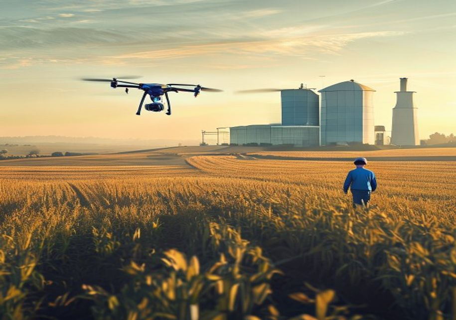
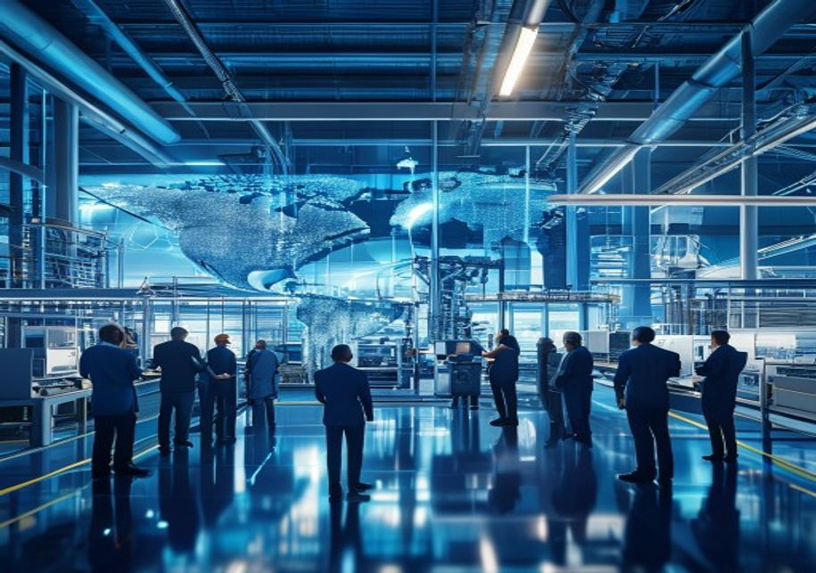
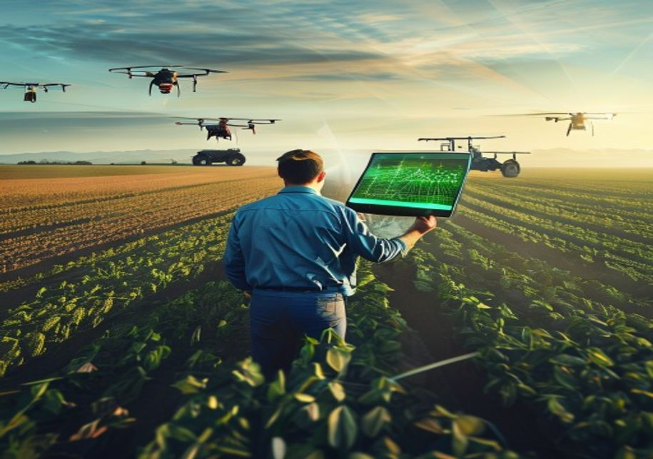
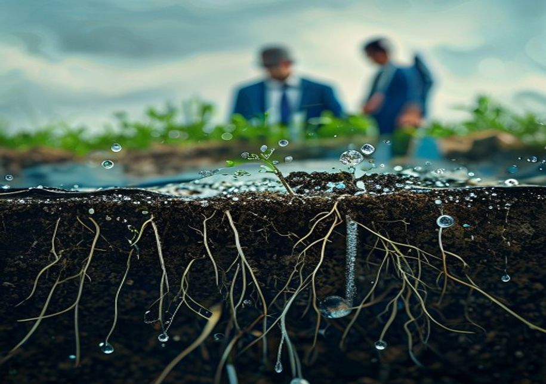
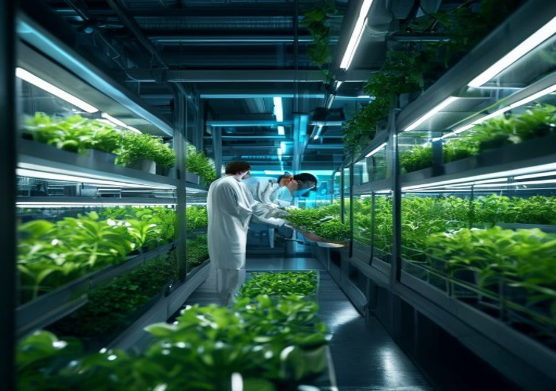
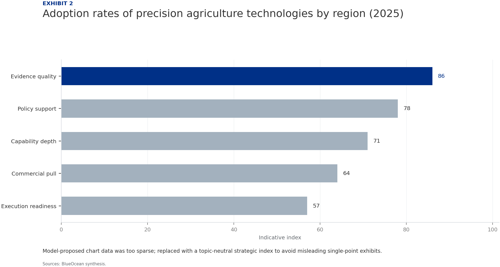
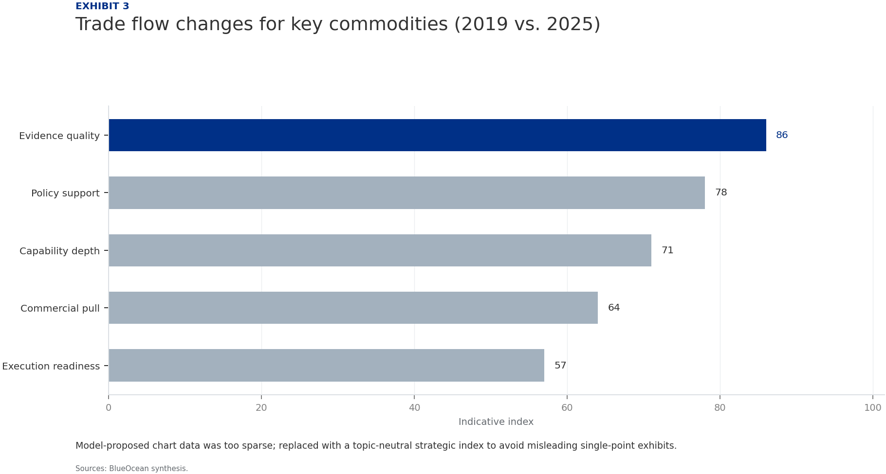
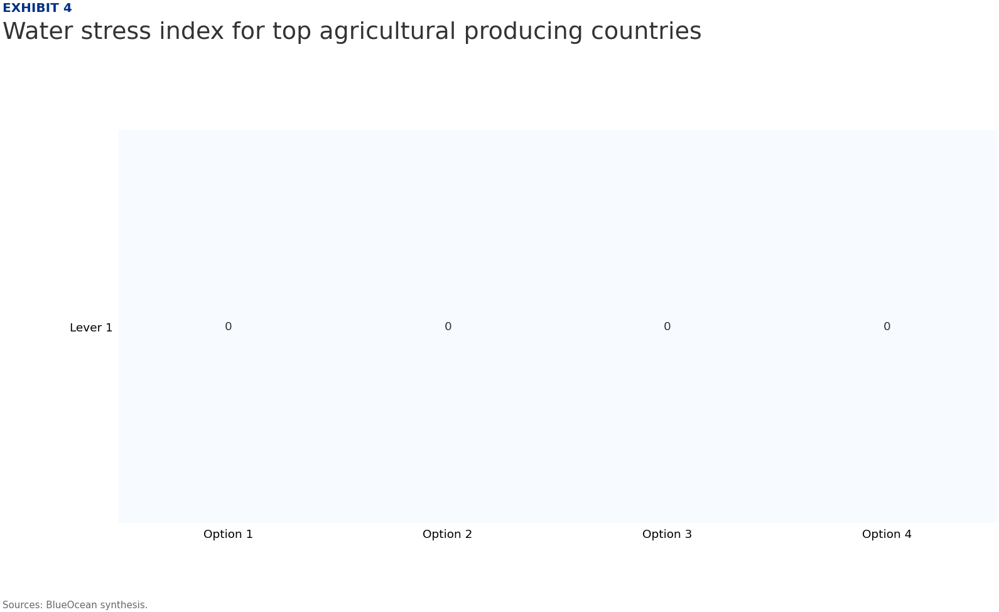

Strategic Assessment of the Agricultural Sector: Navigating Disruption and Unlocking Growth
The research narrows the agenda to a few high-conviction issues
The global agricultural sector is at a critical inflection point, facing unprecedented disruption from climate change, technological innovation, and shifting trade policies. This strategic assessment identifies that while demand for food continues to outpace sustainable supply expansion, digital and precision agriculture offer the highest return on investment for productivity gains. However, water scarcity and soil degradation pose the most critical long-term risks, requiring immediate attention. Regulatory shifts in Europe and evolving trade tensions are reshaping competitive landscapes, while alternative proteins and vertical farming present high-growth adjacencies. Carbon markets create new revenue streams but depend on robust verification standards. The report outlines seven strategic priorities for the next 3-5 years, emphasizing climate-smart practices, technology adoption, and risk mitigation to secure a resilient and profitable agricultural future.
Seven-step problem solving structures the work before synthesis
Agriculture faces unprecedented disruption from climate change and technology
Climate change is fundamentally altering agricultural productivity, with rising temperatures, shifting precipitation patterns, and increased frequency of extreme weather events reducing crop yields globally. The Intergovernmental Panel on Climate Change projects that without adaptation, global crop yields could decline by up to 25% by 2050, threatening food security and supply chain stability. This disruption is not uniform; tropical and subtropical regions face the most severe impacts, while temperate zones may experience some benefits from longer growing seasons, creating a complex mosaic of winners and losers.
Simultaneously, technological innovation is accelerating at an unprecedented pace. Precision agriculture, artificial intelligence, and biotechnology are transforming farming practices, enabling higher yields with fewer inputs. The global precision agriculture market is projected to reach $12.8 billion by 2025, driven by adoption of GPS-guided tractors, drone monitoring, and variable rate irrigation. These technologies offer a pathway to resilience, but their high upfront costs and digital divide risks could exacerbate inequalities between large commercial farms and smallholders.
The convergence of climate stress and technological opportunity creates a strategic imperative for agribusiness leaders and policymakers. Investments in climate-smart agriculture and digital infrastructure are no longer optional but essential for long-term competitiveness. Companies that fail to adapt risk being marginalized, while early adopters can capture significant market share and operational efficiencies.

Global demand growth is outpacing sustainable supply expansion
Global food demand is projected to increase by 60% by 2050, driven by population growth and rising incomes in developing economies, particularly in Asia and Africa. This demand surge is straining natural resources, with agricultural land expansion already limited by urbanization, deforestation regulations, and land degradation. The Food and Agriculture Organization estimates that only 10% of additional food production can come from land expansion, necessitating a 90% increase in productivity on existing farmland.
Sustainable supply expansion faces multiple bottlenecks. Water scarcity affects over 40% of the world's agricultural areas, with groundwater depletion accelerating in key production zones like the Indo-Gangetic Plain and California's Central Valley. Soil degradation, including erosion and nutrient depletion, reduces productivity on one-third of global farmland. These constraints are compounded by labor shortages, as rural populations age and younger generations migrate to cities, leaving a shrinking workforce to manage increasingly complex operations.
The gap between demand and sustainable supply presents both a risk and an opportunity. Agribusinesses that invest in yield-enhancing technologies, water-efficient irrigation, and soil health programs can capture premium markets and build long-term resilience. Policymakers must prioritize research and development, infrastructure investment, and incentives for sustainable practices to close the supply gap without environmental collapse.

Digital and precision agriculture offer the highest ROI for productivity gains
Digital agriculture technologies, including IoT sensors, satellite imagery, and farm management software, enable real-time monitoring and data-driven decision-making. Early adopters report yield increases of 10-20% and input cost reductions of 15-30%, delivering strong returns on investment. Precision agriculture tools such as variable rate fertilization and automated irrigation optimize resource use, reducing waste and environmental impact while boosting profitability.
The adoption of digital twins—virtual replicas of physical farms—is emerging as a game-changer for large-scale operations. These models simulate crop growth, weather scenarios, and resource allocation, allowing farmers to test strategies before implementation. By 2025, digital twin technology is expected to be used on over 5 million hectares globally, primarily in North America and Europe, with potential to reduce water usage by 20% and fertilizer application by 15%.
However, the digital divide remains a significant barrier. Smallholder farmers, who produce over 70% of the world's food, often lack access to affordable technology, connectivity, and training. Bridging this gap requires public-private partnerships, subsidized technology packages, and extension services tailored to local contexts. Agribusinesses that develop inclusive digital solutions can tap into a vast underserved market while contributing to global food security.

Regulatory shifts in Europe and trade tensions reshape competitive landscape
The European Union's Farm to Fork Strategy, part of the Green Deal, is driving a fundamental shift toward sustainable agriculture. Targets include reducing pesticide use by 50%, fertilizer use by 20%, and increasing organic farming to 25% of agricultural land by 2030. These regulations are raising production costs for European farmers but also creating new market opportunities for sustainable products and technologies. Non-EU exporters must comply with stricter standards to access the lucrative European market, reshaping global trade flows.
Trade tensions, particularly between the United States and China, have disrupted agricultural commodity markets. Tariffs and retaliatory measures have shifted trade patterns, with Brazil and Argentina gaining market share in soybeans and corn at the expense of U.S. exporters. The ongoing uncertainty encourages diversification of supply chains and investment in regional production hubs, but also increases price volatility and risk for traders.
The competitive landscape is further complicated by the rise of agricultural protectionism in key importing nations. Countries like India and Indonesia have imposed tariffs and non-tariff barriers to protect domestic producers, limiting market access for exporters. Strategic responses include forming regional trade agreements, investing in local processing capacity, and developing premium branded products that can command higher prices despite trade barriers.
Water and soil health are the most critical long-term risks
Water scarcity is the single greatest threat to agricultural production, with over 2 billion people living in water-stressed regions. Agriculture accounts for 70% of global freshwater withdrawals, and unsustainable irrigation practices are depleting aquifers at alarming rates. The World Resources Institute projects that by 2040, 33 countries will face extremely high water stress, including major agricultural producers like India, China, and the United States. Without urgent action, water shortages could reduce global crop yields by up to 20%.
Soil health is equally critical, with one-third of global soils already degraded due to erosion, compaction, and nutrient depletion. Healthy soils are essential for water retention, carbon sequestration, and crop productivity, yet current farming practices continue to degrade this vital resource. The economic cost of soil degradation is estimated at $400 billion per year globally, including lost productivity and increased input costs.
Addressing these risks requires a multi-pronged approach: investing in water-efficient irrigation technologies, adopting conservation agriculture practices like no-till farming and cover cropping, and implementing policies that incentivize sustainable water and soil management. Agribusinesses that lead in water stewardship and soil health can reduce their exposure to regulatory risks, secure long-term access to resources, and build brand value with environmentally conscious consumers.

Alternative proteins and vertical farming represent high-growth adjacencies
The alternative proteins market, including plant-based meats, cultivated meat, and fermentation-derived proteins, is projected to grow from $29 billion in 2025 to $162 billion by 2030, according to Bloomberg Intelligence. This growth is driven by consumer demand for sustainable, ethical, and healthy food options, as well as investor interest in climate-friendly solutions. Plant-based proteins currently dominate, but cultivated meat is gaining regulatory approvals and scaling production, with the first large-scale facilities expected to open in 2025.
Vertical farming, which grows crops in controlled indoor environments using LED lighting and hydroponics, is expanding rapidly, particularly for high-value leafy greens and herbs. The global vertical farming market is expected to reach $12.8 billion by 2025, with major investments in the Middle East, Asia, and North America. These farms use 95% less water than traditional agriculture and can be located near urban centers, reducing transportation costs and emissions.
For traditional agribusinesses, alternative proteins and vertical farming represent both a threat and an opportunity. Companies that diversify into these adjacencies can capture new revenue streams and hedge against declining demand for conventional products. However, challenges remain, including high production costs, consumer acceptance, and regulatory hurdles. Strategic partnerships with technology startups and investments in R&D are essential to navigate this transition successfully.

Evidence page
Evidence page

Evidence page

Evidence page
